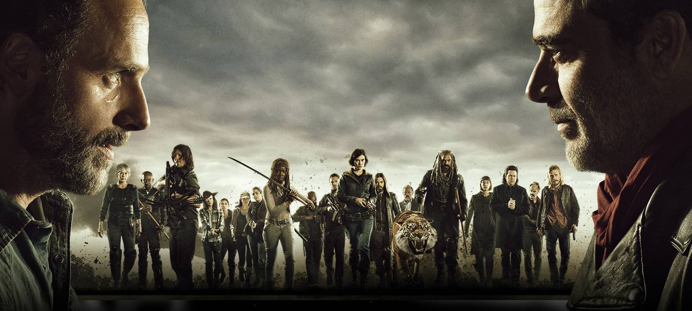

This is my about me page. This page will consist of the variety of topics or pictures that i'm interested in. Feel free to skim around the page. You may find some things that we have in common!
This is my About Me Page!

The San Francisco bridge was first opened to the public in 1937. This awe-astonishing display was named one of the seven civil engineering spectacles of the world by the American Societies of Civil Engineers in 1994.

This free website allows users to customize and create apps or animations. It helps take out that inner creativity that we all have in us.
Visit the website and try it on your own. The Walking Dead series is based on a world where the dead have taken over the world. It's up to Rick Grimes and his group to not only fight against the Dead but other survivors as well.